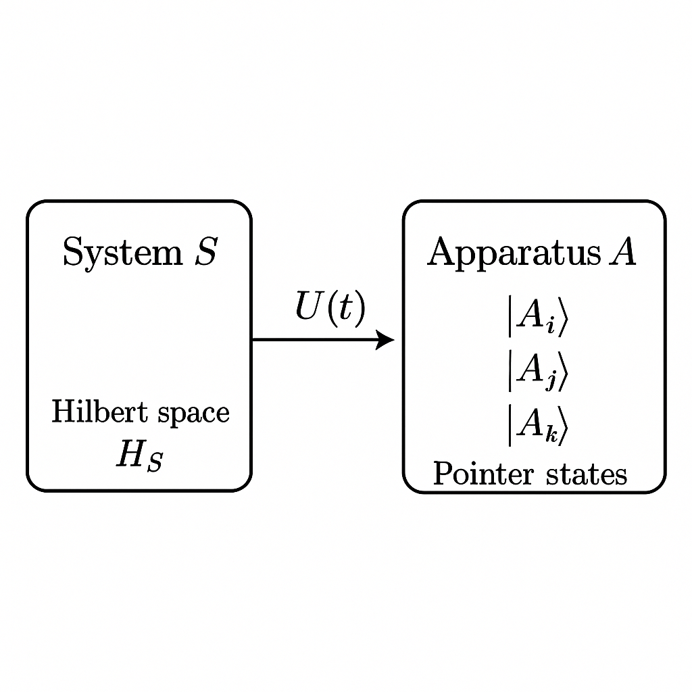
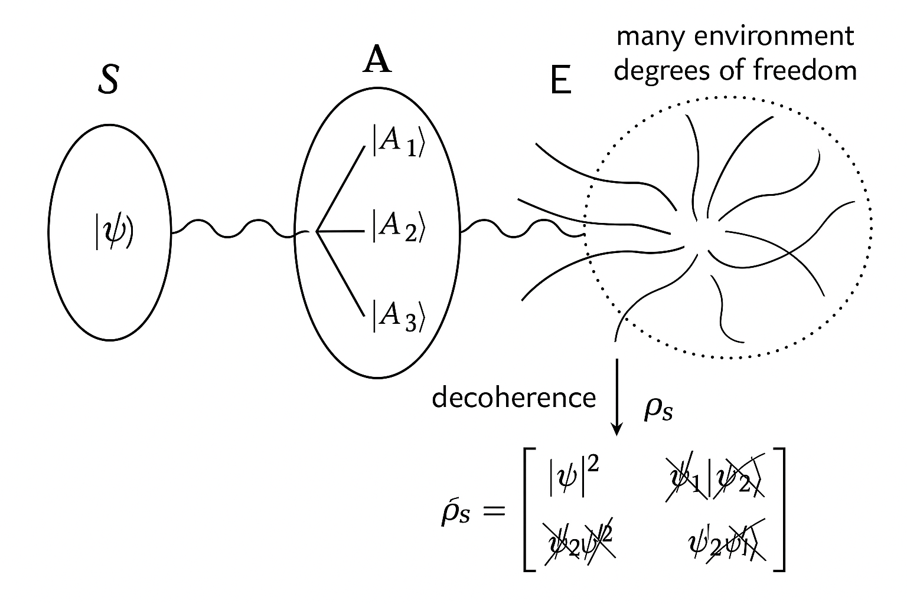
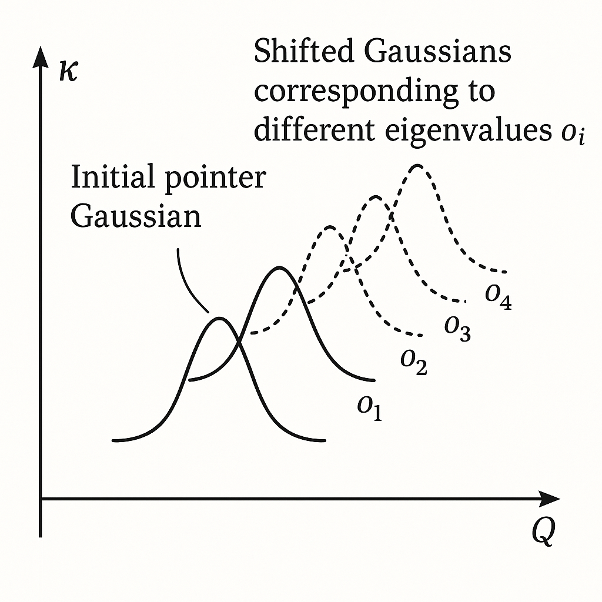
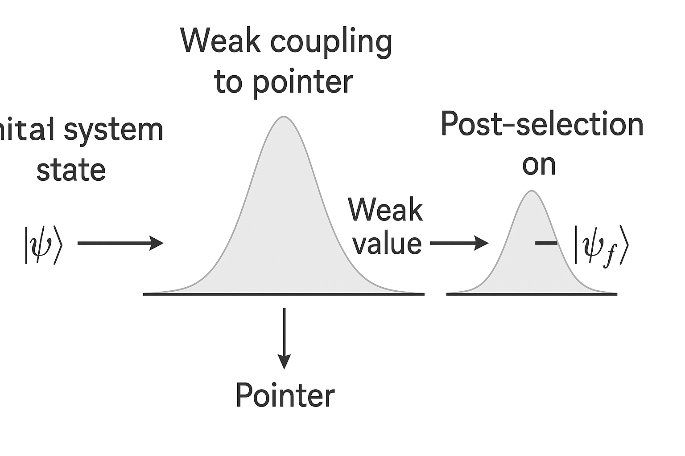
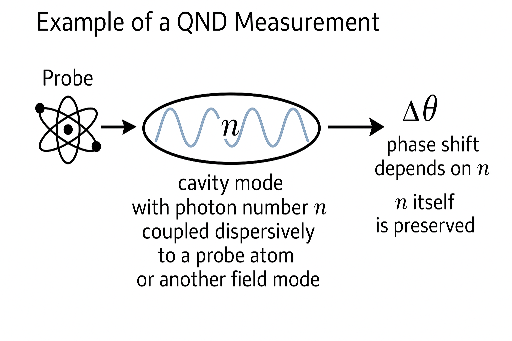
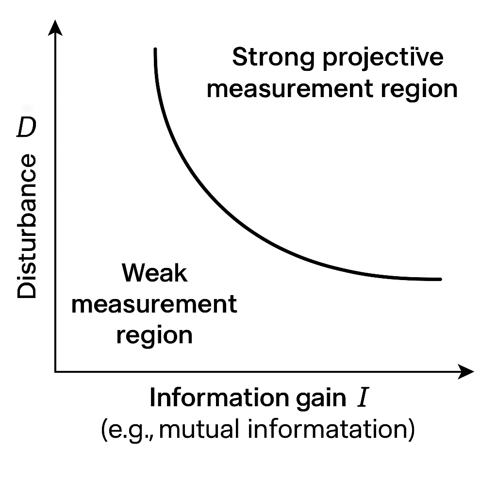
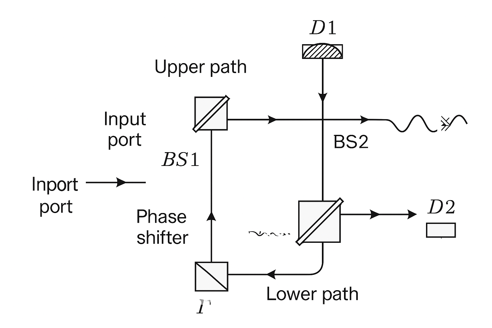
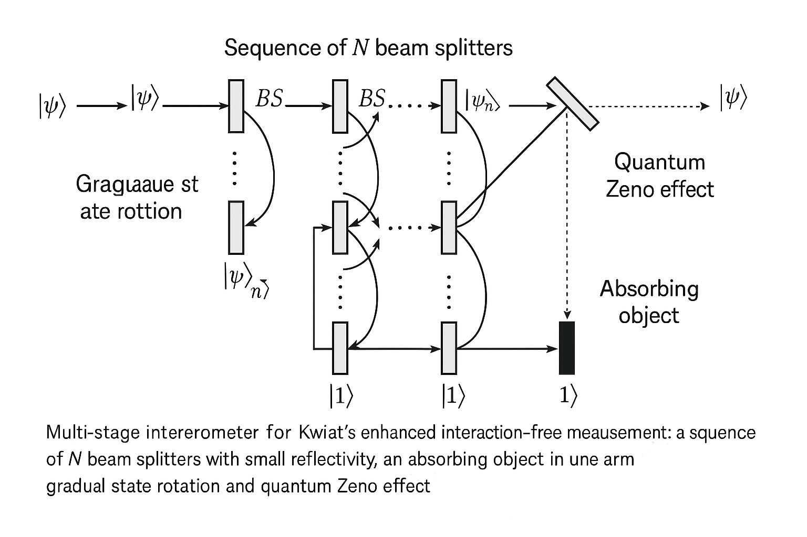
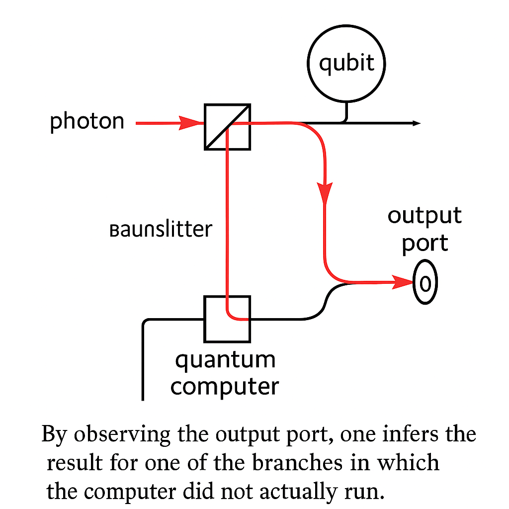

Generated by ChatGPT on 2025-12-16
逐字稿下載：ChatGPT_zh_L02_第_2_講_Decoherence主題_2.txt
完整音檔：
Segment 1:
Segment 2:
Segment 3:
Segment 4:
Segment 5:
Segment 6:
Segment 7:
Segment 8:
Segment 9:
Segment 10:
Segment 11:
Segment 12:
Segment 13:
Segment 14:
本講聚焦在「退相干如何與量子測量連結」，並以 Bohm 的 apparatus+system 模型、各種測量類型（投影測量、弱測量、QND 測量）、資訊獲取與擾動折衷（information-gain–disturbance tradeoff）、以及無交互測量（interaction-free measurement）、Elitzur–Vaidman 炸彈測試與 Kwiat 強化版、counterfactual quantum computation 為主軸，系統性地從數學與物理直覺兩個層面深入。
在 Bohm 的視角與更一般的測量理論框架中，我們把「被測系統」\(S\) 和「測量儀器」\(A\) 一起視為量子系統，總 Hilbert 空間為 \[ \mathcal{H}_{\text{tot}} = \mathcal{H}_S \otimes \mathcal{H}_A. \] 典型的理想測量（von Neumann 型）可以抽象地描述為一個單位ary 演化： \[ U : \mathcal{H}_S \otimes \mathcal{H}_A \to \mathcal{H}_S \otimes \mathcal{H}_A, \] 其將系統的本徵態與儀器的「指標態」建立一對一關聯。
假設我們測量系統可觀察量 \(\hat{O}\)，其具有本徵態 \(\{\lvert o_i\rangle_S\}\)： \[ \hat{O} \lvert o_i\rangle_S = o_i \lvert o_i\rangle_S. \] 儀器有一組可辨識的「宏觀指標態」\(\{\lvert A_i\rangle_A\}\)，以及初始待命狀態 \(\lvert A_0\rangle_A\)。理想測量要求： \[ U \big(\lvert o_i\rangle_S \otimes \lvert A_0\rangle_A\big) = \lvert o_i\rangle_S \otimes \lvert A_i\rangle_A. \]

on the apparatus side.">若系統初態為疊加 \[ \lvert \psi_S\rangle = \sum_i c_i \lvert o_i\rangle_S, \] 則總初態 \[ \lvert \Psi_{\text{tot}}(0)\rangle = \bigg(\sum_i c_i \lvert o_i\rangle_S\bigg)\otimes \lvert A_0\rangle_A. \] 經由測量互動之後： \[ \lvert \Psi_{\text{tot}}(t)\rangle = U \lvert \Psi_{\text{tot}}(0)\rangle = \sum_i c_i \lvert o_i\rangle_S \otimes \lvert A_i\rangle_A. \] 這是「系統-儀器」的糾纏態，尚未有任意經典隨機「塌縮」的成分。
在 Bohm 以外的多數現代理解中，退相干指的是：當我們忽略（或無法完全控制）環境/儀器的自由度後，系統的 約化密度矩陣 的非對角項快速衰減。
總態的密度算符為 \[ \hat{\rho}_{SA} = \lvert \Psi_{\text{tot}}(t)\rangle\langle \Psi_{\text{tot}}(t) \rvert = \sum_{i,j} c_i c_j^* \big(\lvert o_i\rangle\langle o_j\rvert\big)_S \otimes \big(\lvert A_i\rangle\langle A_j\rvert\big)_A. \] 若我們只關心系統 S，取偏跡： \[ \hat{\rho}_S = \mathrm{Tr}_A\big[\hat{\rho}_{SA}\big] = \sum_{i,j} c_i c_j^* \lvert o_i\rangle\langle o_j\rvert \, \mathrm{Tr}_A\big[\lvert A_i\rangle\langle A_j\rvert\big]. \] 注意 \[ \mathrm{Tr}_A\big[\lvert A_i\rangle\langle A_j\rvert\big] = \langle A_j \vert A_i\rangle. \] 如果指標態幾乎正交： \[ \langle A_j \vert A_i\rangle \approx \delta_{ij}, \] 則約化密度矩陣接近對角： \[ \hat{\rho}_S \approx \sum_i \lvert c_i\rvert^2 \lvert o_i\rangle\langle o_i\rvert. \]
這就是「退相干」在數學上的核心表述：原本純態 \(\lvert \psi_S\rangle\) 的疊加，相對位相資訊被「散佈」到系統-儀器糾纏中；若我們忽略儀器自由度，系統看起來變成一個經典機率混合態： \[ \hat{\rho}_S^{\text{(decoh)}} = \sum_i p_i \lvert o_i\rangle\langle o_i\rvert, \quad p_i = \lvert c_i\rvert^2. \]
更現代的退相干理論（Zurek 等人）把儀器進一步與「環境」\(E\) 耦合。環境與儀器之間的互動，使得某些儀器態 \(\lvert A_i\rangle\) 在演化下相對穩定，不易被環境散佈、破壞，這些稱為 指標態（pointer states）。
直覺上，指標態是滿足某種「robustness」條件的態，像是： \[ \mathcal{E}\big[\lvert A_i\rangle\langle A_i\rvert\big] \approx \lvert A_i\rangle\langle A_i\rvert, \] 其中 \(\mathcal{E}\) 是描述儀器與環境交互的量子通道。這些態自然形成「優選基」（preferred basis），在這個基底上非對角項很快被環境的散射、耦合所抹除。

, and many environment degrees of freedom causing decoherence of off-diagonal terms in S's reduced density matrix.">因此，在 Bohm 的 apparatus+system 結構上加入環境 \(E\) 後，測量過程可以分為：
von Neumann 給出一個典型的測量哈密頓量： \[ \hat{H}_{\text{int}} = g(t)\,\hat{O}_S \otimes \hat{P}_A, \] 其中 \(\hat{O}_S\) 是被測的系統可觀察量，\(\hat{P}_A\) 是儀器的「動量」算符，\(g(t)\) 是在測量期間作用的時間依賴耦合。
令測量在時間區間 \([0,\tau]\) 作用，定義測量「強度」 \[ \kappa = \int_0^\tau g(t)\,dt. \] 忽略自由演化，總演化算符： \[ \hat{U} = \exp\bigg(-\frac{i}{\hbar}\, \kappa\, \hat{O}_S \otimes \hat{P}_A\bigg). \] 儀器位置算符 \(\hat{Q}_A\) 和動量 \(\hat{P}_A\) 滿足 \[ [\hat{Q}_A, \hat{P}_A] = i\hbar. \]
假設儀器初態為一個位置波包 \(\lvert \phi(Q)\rangle_A\)，位置表象為波函數 \(\phi(Q)\)。若系統在 \(\hat{O}_S\) 本徵態 \(\lvert o_i\rangle_S\)： \[ \hat{U}\,\big(\lvert o_i\rangle_S\otimes\lvert \phi\rangle_A\big) = \lvert o_i\rangle_S \otimes e^{-i\kappa o_i\hat{P}_A/\hbar}\lvert \phi\rangle_A. \]
利用 \(e^{-i a\hat{P}/\hbar}\) 會將位置平移 \(a\) 的性質： \[ e^{-i a\hat{P}/\hbar}\, \phi(Q) = \phi(Q-a), \] 得到儀器波包位置被平移： \[ \phi(Q)\to \phi(Q - \kappa o_i). \] 因此對疊加態 \(\sum_i c_i\lvert o_i\rangle\)： \[ \lvert \Psi_{\text{tot}}\rangle = \sum_i c_i \lvert o_i\rangle_S \otimes \lvert \phi(Q-\kappa o_i)\rangle_A. \]

若平移量 \(\kappa(o_i - o_j)\) 遠大於儀器波包寬度 \(\Delta Q\)，則不同 \(i\) 的儀器態幾乎正交： \[ \langle \phi(Q-\kappa o_j)\vert \phi(Q-\kappa o_i)\rangle \approx 0,\quad i\neq j. \] 前節所述的 trace-out 後，\(\rho_S\) 在 \(\{\lvert o_i\rangle\}\) 基底上退相干。
在環境模型下（例如 Caldeira–Leggett 模型，或量子布朗運動），退相干時間常因為環境自由度的巨大數目而極短。以一個最簡化的位移耦合模型為例，系統與環境互動哈密頓量 \[ \hat{H}_{\text{int}} = \hat{O}_S \otimes \sum_k g_k \hat{X}_k, \] 環境初態 \(\lvert E_0\rangle\)，疊加態 \(\sum_i c_i \lvert o_i\rangle_S\) 耦合後： \[ \lvert \Psi_{SE}(t)\rangle = \sum_i c_i \lvert o_i\rangle_S \otimes \lvert E_i(t)\rangle_E. \] 約化密度矩陣： \[ \hat{\rho}_S(t) = \sum_{i,j} c_i c_j^*\, \lvert o_i\rangle\langle o_j\rvert \, \langle E_j(t) \vert E_i(t)\rangle. \] 若隨時間 \(\langle E_j(t) \vert E_i(t)\rangle\) 衰減為 \[ \langle E_j(t) \vert E_i(t)\rangle = e^{-\Gamma_{ij}(t)}, \] 則非對角元素行為： \[ \rho_{ij}(t) = c_i c_j^* e^{-\Gamma_{ij}(t)}. \] 在許多模型中，\(\Gamma_{ij}(t)\) 會在一個極短的時間尺度 \(t_D\) 上迅速增大，使得 \(\rho_{ij}(t)\) 幾乎為零。這個 \(t_D\) 即為 退相干時間。
更一般地，開放系統動力學可以由 Lindblad 主方程描述： \[ \frac{d\hat{\rho}_S}{dt} = -\frac{i}{\hbar}[\hat{H}_S,\hat{\rho}_S] + \sum_\alpha \gamma_\alpha \left( \hat{L}_\alpha \hat{\rho}_S \hat{L}_\alpha^\dagger - \frac{1}{2}\{\hat{L}_\alpha^\dagger \hat{L}_\alpha, \hat{\rho}_S\} \right). \]
若 Lindblad 算符 \(\hat{L}_\alpha\) 對應於某可觀察量的本徵基底投影，則主方程會在該基底上抑制非對角項。例如純退相干模型： \[ \hat{L} = \sqrt{\gamma}\,\hat{O}_S. \] 寫在 \(\hat{O}_S\) 的本徵基 \(\lvert o_i\rangle\) 中，令 \(\rho_{ij} = \langle o_i\vert \hat{\rho}_S\vert o_j\rangle\)，可得： \[ \frac{d\rho_{ij}}{dt} = -i\omega_{ij}\rho_{ij} - \gamma (o_i - o_j)^2 \rho_{ij}, \] 其中 \(\omega_{ij} = (E_i - E_j)/\hbar\)。解為： \[ \rho_{ij}(t) = \rho_{ij}(0) \exp\big[-i\omega_{ij}t - \gamma (o_i-o_j)^2 t\big]. \] 可見非對角項以速率 \(\gamma (o_i-o_j)^2\) 衰減，系統在 \(\{\lvert o_i\rangle\}\) 基底上退相干。
一般量子測量可以用 POVM（Positive Operator-Valued Measure）表示：給定一組正算符 \(m\)，也就是一整組的 \(E m\) 的集合。-->\(\{E_m\}\)，滿足 \[ E_m \ge 0,\quad \sum_m E_m = \mathbb{I}. \] 若系統態為 \(\hat{\rho}\)，得到結果 \(m\) 的機率： \[ p(m) = \mathrm{Tr}[\hat{\rho} E_m]. \] 測量後狀態（在條件化結果 \(m\) 下）則可由 Kraus 算符 \(\{M_m\}\) 描述： \[ E_m = M_m^\dagger M_m,\quad \hat{\rho}\to \hat{\rho}_m' = \frac{M_m\hat{\rho} M_m^\dagger}{p(m)}. \]
投影測量（projective measurement） 是特殊情況：\(E_m = \Pi_m\) 為投影算符 \(\Pi_m^2 = \Pi_m = \Pi_m^\dagger\)，通常 \(M_m = \Pi_m\)，測量後： \[ \hat{\rho}\to \hat{\rho}_m' = \frac{\Pi_m \hat{\rho} \Pi_m}{\mathrm{Tr}[\hat{\rho}\Pi_m]}. \] 這恰是「波函數塌縮」的數學版本。
弱測量指的是：系統與儀器的耦合非常小，使得儀器指標的偏移量也很小，單次測量幾乎無法分辨結果，但對系統狀態的擾動也非常弱。透過大量重複實驗可以統計地重建可觀察量的期望值，甚至在預選+後選條件下得到「弱值」。
仍使用 von Neumann 耦合 \[ \hat{H}_{\text{int}} = g(t)\hat{O}\otimes \hat{P}, \] 但令 \(\kappa\) 很小，使得 pointer 波包的位移 \(\kappa o_i\) 遠小於其寬度 \(\Delta Q\)。初態： \[ \lvert\Psi(0)\rangle = \lvert\psi_i\rangle_S \otimes \lvert\phi\rangle_A. \] 時間演化： \[ \hat{U}\approx 1 - \frac{i}{\hbar}\kappa \hat{O}\otimes\hat{P}, \] 皆保留到一階。若之後對系統做後選（post-selection），只保留被投影至 \(\lvert\psi_f\rangle\) 的結果： \[ \lvert\Phi_A\rangle \propto \langle \psi_f\vert \hat{U}\vert\psi_i\rangle\lvert\phi\rangle_A \approx \langle \psi_f\vert \psi_i\rangle \Big( 1 - \frac{i\kappa}{\hbar}O_w \hat{P} \Big)\lvert\phi\rangle_A, \] 其中 \[ O_w = \frac{\langle \psi_f\vert \hat{O}\vert \psi_i\rangle}{\langle \psi_f\vert \psi_i\rangle} \] 稱為 \(\hat{O}\) 的 弱值（weak value）。
在位置表象下，這相當於 pointer 波包被平移一個與 Re\((O_w)\) 成正比的量，並在動量空間中有與 Im\((O_w)\) 成正比的變化。值得注意的是，弱值可以超出 \(\hat{O}\) 的本徵值範圍，甚至是複數，這在解釋上相當微妙。

, weak coupling to pointer with broad Gaussian, and post-selection on |ψ_f>, leading to a small shift of the pointer distribution corresponding to the weak value.">退相干角度：弱測量只在系統與儀器間產生很小的糾纏，系統約化密度矩陣的非對角項衰減很慢、很小，因此系統保留了大部分量子相干性。這與強投影測量相比，有明顯差異：
Quantum Non-Demolition（QND）測量的目標是：在測量某可觀察量的同時，盡量不擾動其未來的測量結果。形式上，若我們想要 QND 測量可觀察量 \(\hat{O}\)，則要求：
若這兩條件成立，即使系統-儀器-環境之間產生退相干，\(\hat{O}\) 的本徵值在每次重複的測量中仍可重現。退相干的主要作用是使得 其他 與 \(\hat{O}\) 不對易的可觀察量失去相干性。
舉例：在量子光學中，測量光場模態的光子數算符 \(\hat{n} = \hat{a}^\dagger\hat{a}\) 的 QND 方案，常藉由腔 QED 或非線性介質，使得： \[ \hat{H}_{\text{int}} \propto \hat{n} \otimes \hat{P}_A, \] 並且在演化中滿足 \[ [\hat{n}, \hat{H}_S] = 0,\quad [\hat{n}, \hat{H}_{\text{int}}]=0. \] 如此可在不破壞光子數的前提下讀取其資訊，這在重力波偵測、量子計量中尤其重要。

退相干角度：QND 測量實際上選擇一組指標態為 \(\hat{O}\) 的本徵態，在這組基底上退相干，使得 \(\hat{O}\) 變成一個穩定的「經典隨機變數」。這與 Zurek 的 pointer states 概念深度呼應。
量子測量不可能在「完全不擾動系統」的前提下「無限精確地獲得資訊」，這是 Heisenberg 型測量-擾動關係的一般化。形式上，各種不等式揭示：
一種具體化的方式是比較「測量誤差」\(\epsilon(A)\) 與「擾動」\(\eta(B)\)，Ozawa 提出的一個廣義測量-擾動關係為： \[ \epsilon(A)\,\eta(B) + \epsilon(A)\,\sigma(B) + \sigma(A)\,\eta(B) \ge \frac{1}{2} \big\vert \langle [\hat{A},\hat{B}]\rangle \big\vert, \] 其中 \(\sigma(A)\) 是可觀察量 \(\hat{A}\) 在初態中的標準差。這顯示 \(\epsilon(A)\) 和 \(\eta(B)\) 不能同時很小。
從量子資訊角度，測量可以被視作一個量子通道 \(\mathcal{M}\)，將初態 \(\hat{\rho}\) 映射到「經測量後的狀態」\(\mathcal{M}(\hat{\rho})\)，同時產生一個經典輸出 \(m\)（儀器讀值）。資訊獲取的量可以用 mutual information 或 accessible information 等衡量，擾動則可以用狀態之間的「距離」來衡量（例如 trace distance 或 Uhlmann fidelity）。
若我們關注對兩個非正交純態 \(\lvert\psi_0\rangle,\lvert\psi_1\rangle\) 的鑑別問題，Helstrom bound 給出最佳錯誤機率 \(P_e\)： \[ P_e^{\text{min}} = \frac{1}{2}\left(1-\sqrt{1 - 4\pi_0\pi_1 \,\vert\langle\psi_0\vert\psi_1\rangle\vert^2}\right), \] 其中 \(\pi_0,\pi_1\) 是先驗機率。為了達到此 bound，測量必然對狀態造成一定擾動；如果嘗試設計「低擾動」測量，得到的資訊必然少於此最優值。這裡的「少資訊」實際上意味著退相干程度較小。

在許多模型中，擾動可直接用「退相干」來表示。舉例：系統初態 \(\hat{\rho}\) 與環境耦合，產生量子操作 \(\mathcal{E}\)： \[ \hat{\rho}' = \mathcal{E}(\hat{\rho}) = \sum_k E_k \hat{\rho} E_k^\dagger. \] 若這個通道是「退相干通道」，在某基底 \(\{\lvert i\rangle\}\) 上非對角項被縮小： \[ \rho_{ij}' = \lambda_{ij} \rho_{ij},\quad \vert\lambda_{ij}\vert < 1,\ i\ne j, \] 則此 \(\lambda_{ij}\) 可以視作「相干度保留因子」。若某一測量策略獲得較多關於此基底的資訊，往往伴隨著 \(\vert\lambda_{ij}\vert\) 較小，即較強退相干。這是「資訊-退相干」的直接關係。
所謂 無交互測量（interaction-free measurement, IFM） 指的是：在某些實驗中，我們可以在「幾乎不發生任何實際能量/粒子交互」的情況下，仍然推斷出某個物體或事件的存在。這聽起來似乎違反「沒有交互就沒有測量」的直覺，但在量子力學中，路徑疊加與相干性使得這種測量成為可能。
最著名的例子為 Elitzur–Vaidman 炸彈測試實驗，後面將詳細分析。
典型的 IFM 使用 Mach–Zehnder 干涉儀（MZI）：單一光子經過第一個 50/50 分光器後，路徑分為 \(\lvert u\rangle\)（上路）與 \(\lvert l\rangle\)（下路）的疊加。令輸入光子態為 \(\lvert \text{in}\rangle\)，經第一個分光器： \[ \lvert\text{in}\rangle \to \frac{1}{\sqrt{2}}(\lvert u\rangle + i\lvert l\rangle), \] （相位約定不同會有 \(i\) 或 \(-i\)，不影響干涉結論）。
沒有任何阻擋物時，兩條路徑在第二個分光器重組，若相位調整得宜，可以使得所有光子都出現在某一個輸出 port，另一個 port 完全暗（破壞性干涉）。這本質上是一個「相干干涉」效應。

假設我們想測試一個炸彈是否「好炸」（即如果有光子撞到其感測器，就會被引爆）。將炸彈放在下路路徑上（\(\lvert l\rangle\)）。三種情況：
在有好炸彈時，分析如下。經第一個分光器之後： \[ \lvert\psi\rangle = \frac{1}{\sqrt{2}}(\lvert u\rangle + i\lvert l\rangle). \] 若光子走下路（機率 \(1/2\)），炸彈爆炸，實驗終止。若光子走上路（機率 \(1/2\)），則狀態變為 \(\lvert u\rangle\)，下路不再有光子。這時在第二個分光器，\(\lvert u\rangle\) 分裂成： \[ \lvert u\rangle \to \frac{1}{\sqrt{2}}(\lvert D_1\rangle + i\lvert D_2\rangle), \] 因此若炸彈沒有爆（意味著光子走上路），則有 \(1/2\) 機率從 \(D_1\) 出來，\(1/2\) 從 \(D_2\) 出來。
整理機率：
關鍵：若偵測到 \(D_2\) 亮（本來在無炸彈時是暗 port），我們可以斷定路徑曾被阻斷，也就是有好炸彈存在；然而在這個事件中，炸彈並沒有爆炸。換句話說，我們「在沒有實際發生光子-炸彈交互」的情況下測到了炸彈的存在，因此稱為 無交互測量。
從退相干角度來看，「炸彈是否吸收光子」對系統的路徑疊加具有哪一路徑退相干的效果。放置炸彈等同於引入一個「哪一路徑資訊」的可能性：
若我們使用 Lindblad 模型描述「路徑基底上的退相干通道」，則在有炸彈的情況，干涉項 \(\lvert u\rangle\langle l\rvert\) 會被大幅抑制；而 正是這種退相干讓暗 port 變亮，使得我們能以 \(D_2\) 亮來偵測炸彈。
因此 IFM 並非真的「沒有任何交互」，而是「沒有發生能量交換或吸收事件」，但是「量子相干因為可能的交互而被破壞」，透過退相干間接地提供了資訊。
原始 EV 方案中，在不引爆炸彈的情況下成功判定「好炸彈」的機率為 \(1/4\)。Kwiat 等人提出利用 量子 Zeno 效應 提升這個效率，甚至逼近 1。
基本思路：通過一串多次的「部分干涉」與「近乎測量」操作，使得光子狀態逐漸從「通過的路徑」旋轉到「反射的路徑」，在每一步中與炸彈相互作用的機率極小，但累積起來可以達到「近乎確定地偵測到炸彈」而又渺小的炸彈爆炸機率。

將 Mach–Zehnder 的兩路徑空間視作兩能階系統 \(\{\lvert 0\rangle, \lvert 1\rangle\}\)，其中：
單一「小角度」分光器（beam splitter）可視為一個小旋轉： \[ \hat{U}_\theta = \begin{pmatrix} \cos\theta & -\sin\theta\\ \sin\theta & \cos\theta \end{pmatrix}, \] 在基底 \(\{\lvert 0\rangle,\lvert 1\rangle\}\) 上作用。初態為 \(\lvert 0\rangle\)，經 \(N\) 次小旋轉： \[ \hat{U}_\theta^N \lvert 0\rangle = \begin{pmatrix} \cos(N\theta)\\ \sin(N\theta) \end{pmatrix}. \] 若無炸彈，選擇 \(\theta = \frac{\pi}{2N}\)，則 \[ \hat{U}_\theta^N \lvert 0\rangle = \lvert 1\rangle, \] 即光子從完全在安全路徑轉成完全在危險路徑的輸出 port。
若有炸彈，則每經過一次小分光，「\(\lvert 1\rangle\) 分量」就有被炸彈吸收的可能。假設炸彈作為「吸收測量」，一旦狀態有 \(\lvert 1\rangle\) 分量就可能引爆，但若在每一步吸收機率都非常小，總引爆機率可被控制得很低。
更精確地，可以對每一步寫下 Kraus 操作：
在「未爆條件下」的演化就像是「\(\lvert 1\rangle\) 慢慢被 Zeno 固定在 0」的過程，造成狀態幾乎維持在 \(\lvert 0\rangle\)，但每一步小旋轉卻讓我們累積了關於炸彈存在的資訊。最後光子仍然幾乎在 \(\lvert 0\rangle\)，而不是像無炸彈時那樣旋轉到 \(\lvert 1\rangle\)。
Kwiat 方案中，若 \(N\) 很大，炸彈爆炸機率可壓低為 \(\mathcal{O}(1/N)\)，而在不爆炸條件下成功辨認「有炸彈」的機率可以趨近 1。從退相干觀點：
這說明了資訊獲取與退相干在 IFM 中的精細平衡：透過多次「極微小的退相干影響」實現高效率的無交互測量。
Counterfactual quantum computation 的想法是：利用類似 IFM 與量子 Zeno 的機制，使得我們可以在「計算機未實際執行某條量子演算法」的路徑中，就已經獲得計算結果的資訊。也就是說，我們從一個「沒有發生的事件」中獲得資訊，這具有強烈的量子直覺挑戰性。
典型的方案中，量子計算模塊被置於干涉儀的某一路徑中，並以「是否啟動計算」作為路徑相關操作。透過多次弱耦合與後選條件，我們可以在某些情況下得知計算結果，而實際運行該演算法的機率卻非常低。

考慮一個「開關量子計算機」操作 \(\hat{U}_C\) 作用於「計算註冊」\(\mathcal{H}_C\)。令控制 qubit \(\lvert 0\rangle\) （不啟動）與 \(\lvert 1\rangle\)（啟動），總 Hilbert 空間為 \(\mathcal{H}_{\text{ctrl}}\otimes\mathcal{H}_C\)。設計一個控制操作： \[ \hat{U}_{\text{ctrl}} = \lvert 0\rangle\langle 0\rvert\otimes\mathbb{I}_C + \lvert 1\rangle\langle 1\rvert\otimes\hat{U}_C. \]
初態為 \[ \lvert\Psi_0\rangle = \big(\alpha\lvert 0\rangle + \beta\lvert 1\rangle\big)\otimes\lvert \psi_{\text{in}}\rangle_C. \] 作用 \(\hat{U}_{\text{ctrl}}\) 後： \[ \lvert\Psi_1\rangle = \alpha\lvert 0\rangle\otimes\lvert \psi_{\text{in}}\rangle + \beta\lvert 1\rangle\otimes\hat{U}_C\lvert \psi_{\text{in}}\rangle. \] 接著再對控制 qubit 作一個「小角度旋轉」\(\hat{R}_\theta\)，以及可能的干涉、後選操作。透過一連串此類操作，我們可使得：
技術上，我們利用計算是否改變 \(\lvert \psi_{\text{in}}\rangle_C\) 的性質來調整干涉，因此在某些測量結果條件下，「計算沒有發生」這一事實本身帶有關於計算輸出的資訊。
在 counterfactual quantum computation 中，若我們把「是否執行 \(\hat{U}_C\)」與「控制 qubit 路徑」視作一個兩能階系統，計算機與環境（包含計算炫態與外部世界）之間的互動實際上引入了路徑相關的退相干：
因此，「沒有退相干的那條路徑」成為我們所選擇的「事實」。這在哲學上引發了討論：資訊似乎源自於「本來可能發生但實際沒有發生的相干分支」，而退相干將其與實際發生的分支區隔開，讓我們可以從觀察中反推出「那個沒有發生的分支本會如何」。
在更廣泛的研究脈絡中，本講所述的概念活躍於多個領域：
在接下來的講次中，我們將更進一步從數學與實驗角度探討「退相干如何塑造量子到經典的過渡」，並連結到具體的量子科技應用（量子感測、量子計算與通訊）以及尚未解決的基礎問題。